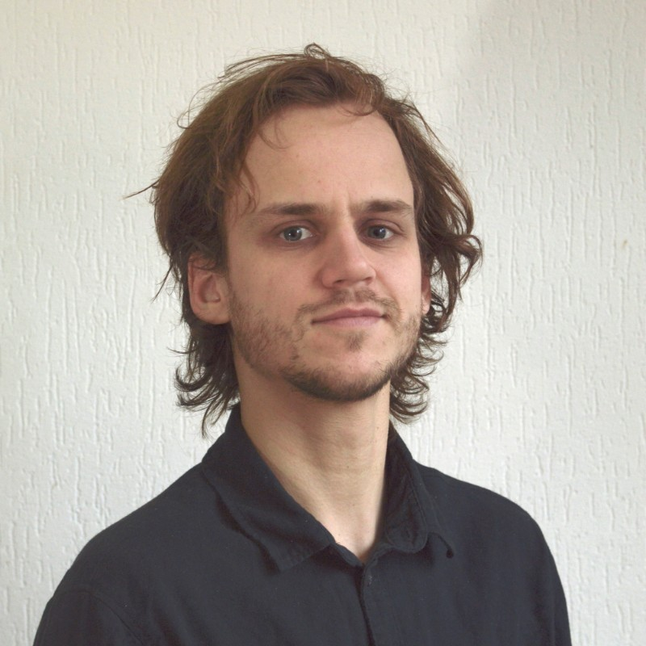

<div id="resume-container">
  <div id="resume">
    <div id="personal-badge-container">
      <div id="personal-badge">
        <!-- [style.border-radius]="showPersonal ? '150px 25px 25px 150px' : ''" -->
        <!-- [style.width]="showPersonal ? '300' : 'auto'" -->
        <div id="image-container">
          
        </div>
        <div id="personal-badge-expand">
          <div id="short-bio">
            <p>
              IK BEN EEN POSITIEF en ruimdenkend persoon. Omdat ik banen heb
              gehad in uiteenlopende branches – cultuursector, horeca, zorg,
              journalistiek, facilitair – heb ik ervaring met veel verschillende
              manieren van werken. Verder ben ik analytisch sterk. Mede door
              mijn universitaire achtergrond ben ik in staat om zowel de details
              als het grotere geheel te zien. Ik wil graag weten hoe dingen in
              elkaar steken en haal plezier uit het ontleden en begrijpen van de
              wereld om me heen.
            </p>
          </div>
          <div id="contact-info-container">
            <p>
              SNIJDERMATTHIJS@GMAIL.COM 06-17487841 VAN IDDEKINGEWEG 69, 9721CB,
              GRONINGEN
            </p>
          </div>
        </div>
      </div>
    </div>

    <div id="resume-main-container">
      <div id="work-experience-container">
        <h3>Werkervaring</h3>
        <mat-accordion multi class="work-experience-accordion">
          <mat-expansion-panel>
            <mat-expansion-panel-header>
              <mat-panel-title> Woonassistent </mat-panel-title>
              <mat-panel-description> ZINN </mat-panel-description>
              <mat-panel-description> 2019 - 2022 </mat-panel-description>
            </mat-expansion-panel-header>
            <p>Werkzaamheden:</p>
            <ul class="list">
              <li>
                Verzorgen van eten, drinken en gezelligheid voor bewoners van de
                zorginstelling.
              </li>
              <li>
                Ondersteuning zorg, met name op sociaal en psychisch gebied
                d.m.v. extra aandacht voor de bewoners en groepsactiviteiten.
              </li>
            </ul>
          </mat-expansion-panel>
        </mat-accordion>

        <mat-accordion class="work-experience-accordion">
          <mat-expansion-panel>
            <mat-expansion-panel-header>
              <mat-panel-title> Webredacteur </mat-panel-title>
              <mat-panel-description> VPRO </mat-panel-description>
              <mat-panel-description> 2018 - 2019 </mat-panel-description>
            </mat-expansion-panel-header>
            <p>Werkzaamheden:</p>
            <ul class="list">
              <li>
                Verzorgen van eten, drinken en gezelligheid voor bewoners van de
                zorginstelling.
              </li>
              <li>
                Ondersteuning zorg, met name op sociaal en psychisch gebied
                d.m.v. extra aandacht voor de bewoners en groepsactiviteiten.
              </li>
            </ul>
          </mat-expansion-panel>
        </mat-accordion>
      </div>
    </div>
  </div>
</div>

<!-- <clr-accordion class="accordion" [clrAccordionMultiPanel]="true">
  <clr-accordion-panel>
    <clr-accordion-title>ZINN 2019 - 2022</clr-accordion-title>
    <clr-accordion-content *clrIfExpanded>
      Content 1
      <clr-accordion-panel>
        <clr-accordion-title>ZINN 2019 - 2022</clr-accordion-title>
        <clr-accordion-content *clrIfExpanded>
          <ul class="list">
            <li>
              Verzorgen van eten, drinken en gezelligheid voor bewoners
              van de zorginstelling.
            </li>
            <li>
              Ondersteuning zorg, met name op sociaal en psychisch
              gebied d.m.v. extra aandacht voor de bewoners en
              groepsactiviteiten.
            </li>
          </ul>
        </clr-accordion-content>
      </clr-accordion-panel>
    </clr-accordion-content>
  </clr-accordion-panel>

  <clr-accordion-panel>
    <clr-accordion-title>Opleidingen</clr-accordion-title>
    <clr-accordion-content *clrIfExpanded
      >Content 2</clr-accordion-content
    >
  </clr-accordion-panel>

  <clr-accordion-panel>
    <clr-accordion-title>Vrijwilligerswerk</clr-accordion-title>
    <clr-accordion-content *clrIfExpanded
      >Content 3</clr-accordion-content
    >
  </clr-accordion-panel>
</clr-accordion>
</div>
</div> -->
